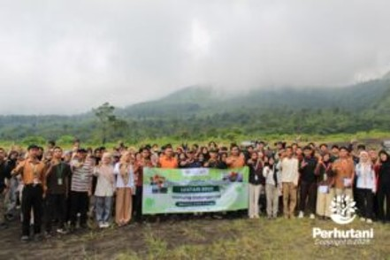

TASIKMALAYA, PERHUTANI (05/01/2026) | Perum Perhutani Kesatuan Pemangkuan Hutan (KPH) Tasikmalaya mendukung pelaksanaan GG Lestari 2026, sebuah gerakan penanaman skala nasional yang diinisiasi oleh Green Generation Indonesia, sebagai bentuk komitmen bersama dalam pelestarian lingkungan dan penguatan peran generasi muda dalam menjaga keberlanjutan hutan.
Kegiatan GG Lestari 2026 dilaksanakan pada Sabtu, 3 Januari 2026, dengan lokasi penanaman di kawasan Wisata Pasir Datar Gunung Galunggung, Linggajati, Kecamatan Sukaratu, Kabupaten Tasikmalaya, Jawa Barat.
Hadir dalam kegiatan tersebut Administratur/KKPH Tasikmalaya Danu Prasetyo, didampingi Wakil Administratur/KSKPH Tasikmalaya Rodiana Rahman, bersama Asisten Perum Perhutani/KBKPH Tasikmalaya serta jajaran, sebagai wujud dukungan langsung Perhutani terhadap kegiatan penanaman dan edukasi lingkungan.
Dalam kegiatan tersebut dilakukan penanaman sebanyak 320 pohon, yang terdiri dari 65 pohon manglid (Manglietia glauca), 225 pohon kopi (Coffea sp.), dan 30 pohon alpukat (Persea americana). Jenis tanaman ini dipilih karena memiliki fungsi ekologis dan ekonomis serta mendukung keberlanjutan kawasan hutan dan wisata alam.
Kegiatan GG Lestari 2026 di Kabupaten Tasikmalaya ini melibatkan lebih dari 100 relawan (volunteer) yang berasal dari berbagai wilayah di Tasikmalaya, menunjukkan tingginya partisipasi dan kepedulian generasi muda terhadap upaya pelestarian lingkungan.
Administratur/KKPH Tasikmalaya Danu Prasetyo menyampaikan bahwa Perhutani menyambut baik kolaborasi dengan Green Generation Indonesia, terlebih kegiatan penanaman dilaksanakan di kawasan wisata alam yang memiliki fungsi lindung, edukatif, dan sosial ekonomi. “Penanaman manglid, kopi, dan alpukat di kawasan Wisata Pasir Datar Gunung Galunggung ini diharapkan dapat memperkuat fungsi ekologis kawasan sekaligus memberikan manfaat jangka panjang bagi masyarakat. Perhutani terus mendorong sinergi dengan komunitas dan generasi muda dalam menjaga kelestarian hutan,” ujarnya.
Sementara itu, Project Leader GG Lestari 2026 Kabupaten Tasikmalaya, Agam Nurkholik, menyampaikan apresiasi atas dukungan Perhutani dan seluruh pihak yang terlibat. “Kami mengucapkan terima kasih kepada Perum Perhutani KPH Tasikmalaya atas kolaborasi yang terjalin. Melalui GG Lestari 2026 ini, kami berharap dapat menumbuhkan kesadaran dan peran aktif generasi muda dalam menjaga kelestarian lingkungan, sehingga tercipta kolaborasi berkelanjutan sebagai investasi jangka panjang bagi kelestarian hutan dan generasi mendatang,” ungkapnya.
Kegiatan GG Lestari 2026 ini diharapkan menjadi pemicu berkelanjutan bagi penguatan kolaborasi antara Perum Perhutani, komunitas lingkungan, dan generasi muda dalam menjaga kelestarian kawasan hutan, khususnya di wilayah Gunung Galunggung, sekaligus memperkuat peran hutan sebagai penyangga kehidupan, sarana edukasi lingkungan, dan bagian dari pembangunan berkelanjutan di Kabupaten Tasikmalaya.
Editor: WK
Copyright © 2026 Warta Nusantara Barat